CODING AGENTS AS PIXEL WORLD MODELS
traex/DeepSeek-V4.1-Flash · 0180
点击播放 · 原生 RGB 像素
逐轮保存的候选
回放视频、检查图与代码变化。
每份候选均可单独播放。实际图片检查记录在下方工具轨迹中。
候选 01播放与检查图
点击播放 · 原生 RGB 像素
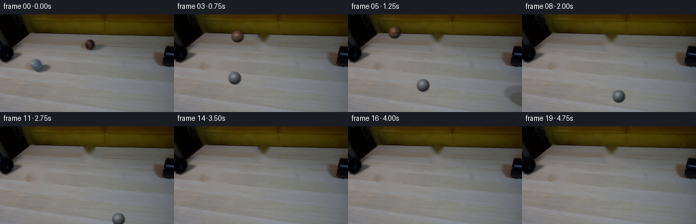
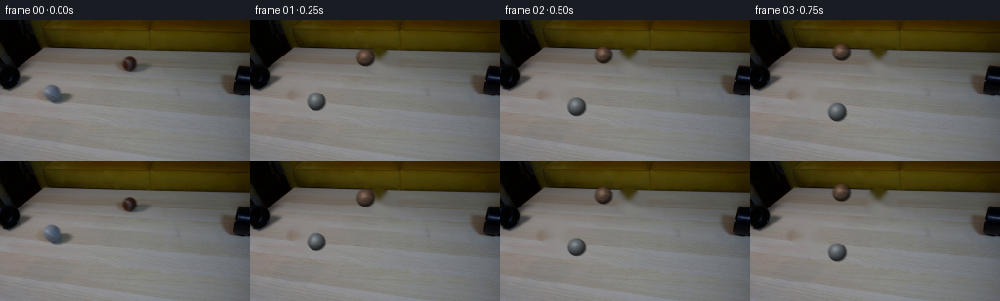
展开代码变化
--- 上一保存版本
+++ 本次保存版本
@@ -0,0 +1,244 @@
+from pathlib import Path
+
+import cv2
+import numpy as np
+from PIL import Image
+
+import artifact_io
+
+
+CASE_DIR = Path(__file__).resolve().parent
+FRAME_COUNT = 20
+WIDTH = 256
+HEIGHT = 144
+FPS = 4.0
+
+
+def make_clean_plate(frame):
+ """Remove the two balls and their contact shadows from the source frame."""
+ mask = np.zeros((HEIGHT, WIDTH), dtype=np.uint8)
+ for center, axes, angle in (
+ ((57, 78), (13, 13), 0),
+ ((67, 84), (12, 9), -12),
+ ((131, 41), (12, 12), 0),
+ ((141, 48), (13, 9), -12),
+ ):
+ cv2.ellipse(mask, center, axes, angle, 0, 360, 255, -1)
+ mask = cv2.dilate(mask, np.ones((3, 3), np.uint8))
+
+ plate = cv2.inpaint(frame, mask, 5, cv2.INPAINT_TELEA)
+
+ # The inpainter can leave a faint low-frequency mark on the smooth tabletop.
+ softened = cv2.GaussianBlur(plate, (0, 0), 1.25)
+ feather = cv2.GaussianBlur(mask.astype(np.float32) / 255.0, (0, 0), 1.2)
+ feather = np.clip(feather * 0.75, 0, 1)[..., None]
+ plate = (plate.astype(np.float32) * (1.0 - feather) +
+ softened.astype(np.float32) * feather)
+ return np.clip(plate, 0, 255).astype(np.uint8)
+
+
+def rotation_axis_angle(axis, angle):
+ axis = np.asarray(axis, dtype=np.float32)
+ axis /= np.linalg.norm(axis)
+ x, y, z = axis
+ c, s = np.cos(angle), np.sin(angle)
+ d = 1.0 - c
+ return np.array(
+ [
+ [c + x * x * d, x * y * d - z * s, x * z * d + y * s],
+ [y * x * d + z * s, c + y * y * d, y * z * d - x * s],
+ [z * x * d - y * s, z * y * d + x * s, c + z * z * d],
+ ],
+ dtype=np.float32,
+ )
+
+
+def make_ball_sprite(radius, color, seam_strength, spin, seed):
+ """Render a small fuzzy tennis ball at 5x resolution."""
+ ss = 5
+ pad = 2.2
+ size = int(np.ceil((radius + pad) * 2 * ss))
+ center = (size - 1) * 0.5
+ yy, xx = np.mgrid[:size, :size].astype(np.float32)
+ nx = (xx - center) / (radius * ss)
+ ny = (yy - center) / (radius * ss)
+ rr = np.sqrt(nx * nx + ny * ny)
+ nz = np.sqrt(np.clip(1.0 - rr * rr, 0.0, 1.0))
+ normal = np.stack((nx, ny, nz), axis=-1)
+
+ # Roll around the axis perpendicular to the screen-space travel direction.
+ rot = rotation_axis_angle((0.18, 0.96, 0.0), spin)
+ tex = normal @ rot.T
+ lon = np.arctan2(tex[..., 0], tex[..., 2])
+ lat = np.arcsin(np.clip(tex[..., 1], -1.0, 1.0))
+
+ # Two crossing arcs form the characteristic tennis-ball seam.
+ phase = 0.75
+ arc_a = lat - 0.37 * np.sin(2.0 * lon + phase)
+ arc_b = lat + 0.37 * np.sin(2.0 * lon + phase)
+ seam_dist = np.minimum(np.abs(arc_a), np.abs(arc_b))
+ seam = np.exp(-(seam_dist / 0.026) ** 2)
+ seam *= (rr < 0.98)
+
+ rng = np.random.default_rng(seed)
+ noise_small = cv2.resize(
+ rng.normal(0.0, 1.0, (size // 3 + 2, size // 3 + 2)).astype(np.float32),
+ (size, size),
+ interpolation=cv2.INTER_CUBIC,
+ )
+ fuzz = 0.965 + 0.025 * noise_small
+
+ light = np.array((-0.44, -0.58, 0.69), dtype=np.float32)
+ light /= np.linalg.norm(light)
+ diffuse = np.clip((normal * light).sum(axis=-1), 0.0, 1.0)
+ fill = np.clip(0.58 + 0.42 * (normal * np.array((-0.15, -0.35, 0.92))).sum(axis=-1), 0.28, 1.0)
+ shade = (0.23 + 0.77 * np.power(diffuse, 0.78)) * fill
+
+ half = light + np.array((0.0, 0.0, 1.0), dtype=np.float32)
+ half /= np.linalg.norm(half)
+ spec = np.power(np.clip((normal * half).sum(axis=-1), 0.0, 1.0), 20.0)
+ rim = np.clip(1.0 - nz, 0.0, 1.0) ** 2
+
+ base = np.asarray(color, dtype=np.float32)
+ rgb = base[None, None, :] * shade[..., None] * fuzz[..., None]
+ rgb += seam_strength * seam[..., None] * np.array((0.95, 0.94, 0.82), dtype=np.float32)
+ rgb += 44.0 * spec[..., None]
+ rgb -= np.array((7.0, 8.0, 7.0))[None, None, :] * rim[..., None]
+ rgb = np.clip(rgb, 0, 255)
+
+ # A noisy, slightly soft silhouette gives the ball its fibrous edge.
+ edge_noise = 0.012 * noise_small
+ alpha = np.clip((1.0 + edge_noise - rr) / (1.25 / (radius * ss)), 0.0, 1.0)
+ alpha = np.clip(alpha * 1.35, 0.0, 1.0)
+ rgba = np.dstack((rgb, alpha * 255.0))
+ return rgba.astype(np.uint8)
+
+
+def add_contact_shadow(frame, center, radius, direction):
+ x, y = center
+ dx, dy = direction
+ norm = max(np.hypot(dx, dy), 1e-5)
+ dx, dy = dx / norm, dy / norm
+ shadow = np.zeros_like(frame, dtype=np.float32)
+ layer = frame.astype(np.float32)
+
+ # The soft shadow stretches away from the upper-left key light.
+ sx = x + radius * (0.30 + 0.35 * dx)
+ sy = y + radius * (0.52 + 0.22 * dy)
+ axes = (max(4, int(radius * 1.30)), max(2, int(radius * 0.52)))
+ angle = np.degrees(np.arctan2(dy, dx))
+ alpha = np.zeros((HEIGHT, WIDTH), dtype=np.float32)
+ cv2.ellipse(alpha, (int(round(sx * 4)), int(round(sy * 4))),
+ (axes[0] * 4, axes[1] * 4), angle, 0, 360, 0.26, -1, shift=0)
+ alpha = cv2.GaussianBlur(alpha, (0, 0), 1.3)
+
+ # Extra concentrated contact darkness directly beneath the ball.
+ contact = np.zeros_like(alpha)
+ cv2.ellipse(contact, (int(round(x * 4)), int(round((y + radius * 0.62) * 4))),
+ (int(radius * 4), max(2, int(radius * 0.35 * 4))), angle, 0, 360, 0.24, -1)
+ contact = cv2.GaussianBlur(contact, (0, 0), 0.9)
+ alpha = np.clip(alpha + contact, 0, 0.42)
+ tint = np.array((37.0, 34.0, 27.0), dtype=np.float32)
+ for c in range(3):
+ layer[..., c] = layer[..., c] * (1.0 - alpha) + tint[c] * alpha
+ return np.clip(layer, 0, 255).astype(np.uint8)
+
+
+def composite_sprite(frame, sprite, center):
+ ss = 5
+ h, w = sprite.shape[:2]
+ cx = int(round(center[0] * ss))
+ cy = int(round(center[1] * ss))
+ x0, y0 = cx - w // 2, cy - h // 2
+ x1, y1 = x0 + w, y0 + h
+
+ # Sprite is rendered on a 5x grid and box-filtered back to image resolution.
+ fx0, fy0 = int(np.floor(x0 / ss)), int(np.floor(y0 / ss))
+ fx1, fy1 = int(np.ceil(x1 / ss)), int(np.ceil(y1 / ss))
+ ix0, iy0 = max(0, fx0), max(0, fy0)
+ ix1, iy1 = min(WIDTH, fx1), min(HEIGHT, fy1)
+ if ix0 >= ix1 or iy0 >= iy1:
+ return frame
+
+ canvas = np.zeros(((iy1 - iy0) * ss, (ix1 - ix0) * ss, 4), dtype=np.float32)
+ dst_x0 = x0 - ix0 * ss
+ dst_y0 = y0 - iy0 * ss
+ sx0, sy0 = max(0, -dst_x0), max(0, -dst_y0)
+ sx1 = min(w, canvas.shape[1] - dst_x0)
+ sy1 = min(h, canvas.shape[0] - dst_y0)
+ dx0, dy0 = dst_x0 + sx0, dst_y0 + sy0
+ canvas[dy0:dy0 + (sy1 - sy0), dx0:dx0 + (sx1 - sx0)] = (
+ sprite[sy0:sy1, sx0:sx1].astype(np.float32)
+ )
+ small = cv2.resize(
+ canvas,
+ (canvas.shape[1] // ss, canvas.shape[0] // ss),
+ interpolation=cv2.INTER_AREA,
+ )
+ alpha = np.clip(small[..., 3:4] / 255.0, 0.0, 1.0)
+ patch = frame[iy0:iy1, ix0:ix1].astype(np.float32)
+ out = patch * (1.0 - alpha) + small[..., :3] * alpha
+ frame[iy0:iy1, ix0:ix1] = np.clip(out, 0, 255).astype(np.uint8)
+ return frame
+
+
+def trajectory(t):
+ # Both balls continue straight away from the opposite pipe mouths.
+ gray = np.array((57.5 + 42.5 * t, 78.0 + 21.5 * t), dtype=np.float32)
+ brown = np.array((131.0 - 50.0 * t, 41.0 - 11.5 * t), dtype=np.float32)
+ return gray, brown
+
+
+def render_frame(plate, index, sprite_cache):
+ t = index / FPS
+ gray_pos, brown_pos = trajectory(t)
+ gray_vel = np.array((42.5, 21.5), dtype=np.float32)
+ brown_vel = np.array((-50.0, -11.5), dtype=np.float32)
+
+ frame = plate.copy()
+ # Shadows are drawn first so the balls occlude their own contact regions.
+ if 25 < gray_pos[0] < WIDTH + 15 and 55 < gray_pos[1] < HEIGHT + 15:
+ frame = add_contact_shadow(frame, gray_pos, 9.3, gray_vel)
+ if -15 < brown_pos[0] < WIDTH - 20 and 20 < brown_pos[1] < HEIGHT:
+ frame = add_contact_shadow(frame, brown_pos, 9.0, brown_vel)
+
+ # A short shutter produces just enough directional softness at this frame rate.
+ shutter = 0.055
+ subframes = 5
+ accum = frame.astype(np.float32)
+ for k in range(subframes):
+ offset = ((k + 0.5) / subframes - 0.5) * shutter
+ gp = gray_pos + gray_vel * offset
+ bp = brown_pos + brown_vel * offset
+ tmp = frame.copy()
+ if -12 < gp[0] < WIDTH + 12 and 25 < gp[1] < HEIGHT + 12:
+ tmp = composite_sprite(tmp, sprite_cache["gray"], gp)
+ if -12 < bp[0] < WIDTH + 12 and 20 < bp[1] < HEIGHT + 12:
+ tmp = composite_sprite(tmp, sprite_cache["brown"], bp)
+ accum += tmp.astype(np.float32)
+ return np.clip(accum / (subframes + 1), 0, 255).astype(np.uint8)
+
+
+def main():
+ source = np.asarray(Image.open(CASE_DIR / "first_frame.png").convert("RGB"))
+ assert source.shape == (HEIGHT, WIDTH, 3)
+ plate_bgr = make_clean_plate(cv2.cvtColor(source, cv2.COLOR_RGB2BGR))
+ plate = cv2.cvtColor(plate_bgr, cv2.COLOR_BGR2RGB)
+
+ sprites = {
+ "gray": make_ball_sprite(9.35, (104.0, 113.0, 120.0), 12.0, 0.15, 18),
+ "brown": make_ball_sprite(9.25, (103.0, 73.0, 55.0), 44.0, 2.0, 27),
+ }
+
+ frames = [source.copy()]
+ for index in range(1, FRAME_COUNT):
+ frames.append(render_frame(plate, index, sprites))
+
+ frames = np.stack(frames)
+ assert frames.shape == (FRAME_COUNT, HEIGHT, WIDTH, 3)
+ assert np.array_equal(frames[0], source)
+ artifact_io.save(frames, CASE_DIR)
+
+
+if __name__ == "__main__":
+ main()
候选 02播放与检查图
点击播放 · 原生 RGB 像素

展开代码变化
--- 上一保存版本
+++ 本次保存版本
@@ -92,7 +92,7 @@
light /= np.linalg.norm(light)
diffuse = np.clip((normal * light).sum(axis=-1), 0.0, 1.0)
fill = np.clip(0.58 + 0.42 * (normal * np.array((-0.15, -0.35, 0.92))).sum(axis=-1), 0.28, 1.0)
- shade = (0.23 + 0.77 * np.power(diffuse, 0.78)) * fill
+ shade = (0.24 + 0.76 * np.power(diffuse, 0.86)) * fill
half = light + np.array((0.0, 0.0, 1.0), dtype=np.float32)
half /= np.linalg.norm(half)
@@ -102,7 +102,7 @@
base = np.asarray(color, dtype=np.float32)
rgb = base[None, None, :] * shade[..., None] * fuzz[..., None]
rgb += seam_strength * seam[..., None] * np.array((0.95, 0.94, 0.82), dtype=np.float32)
- rgb += 44.0 * spec[..., None]
+ rgb += 52.0 * spec[..., None]
rgb -= np.array((7.0, 8.0, 7.0))[None, None, :] * rim[..., None]
rgb = np.clip(rgb, 0, 255)
@@ -110,35 +110,32 @@
edge_noise = 0.012 * noise_small
alpha = np.clip((1.0 + edge_noise - rr) / (1.25 / (radius * ss)), 0.0, 1.0)
alpha = np.clip(alpha * 1.35, 0.0, 1.0)
- rgba = np.dstack((rgb, alpha * 255.0))
- return rgba.astype(np.uint8)
+ rgba = np.dstack((rgb, alpha * 255.0)).astype(np.uint8)
+ return cv2.GaussianBlur(rgba, (0, 0), 2.0)
def add_contact_shadow(frame, center, radius, direction):
x, y = center
- dx, dy = direction
- norm = max(np.hypot(dx, dy), 1e-5)
- dx, dy = dx / norm, dy / norm
- shadow = np.zeros_like(frame, dtype=np.float32)
layer = frame.astype(np.float32)
# The soft shadow stretches away from the upper-left key light.
- sx = x + radius * (0.30 + 0.35 * dx)
- sy = y + radius * (0.52 + 0.22 * dy)
- axes = (max(4, int(radius * 1.30)), max(2, int(radius * 0.52)))
- angle = np.degrees(np.arctan2(dy, dx))
+ sx = x + radius * 0.36
+ sy = y + radius * 0.58
+ axes = (max(4, int(radius * 1.42)), max(2, int(radius * 0.53)))
alpha = np.zeros((HEIGHT, WIDTH), dtype=np.float32)
- cv2.ellipse(alpha, (int(round(sx * 4)), int(round(sy * 4))),
- (axes[0] * 4, axes[1] * 4), angle, 0, 360, 0.26, -1, shift=0)
+ cv2.ellipse(alpha, (int(round(sx)), int(round(sy))),
+ axes, 12, 0, 360, 0.24, -1)
alpha = cv2.GaussianBlur(alpha, (0, 0), 1.3)
# Extra concentrated contact darkness directly beneath the ball.
contact = np.zeros_like(alpha)
- cv2.ellipse(contact, (int(round(x * 4)), int(round((y + radius * 0.62) * 4))),
- (int(radius * 4), max(2, int(radius * 0.35 * 4))), angle, 0, 360, 0.24, -1)
+ cv2.ellipse(contact, (int(round(x + radius * 0.18)),
+ int(round(y + radius * 0.72))),
+ (int(radius * 0.95), max(2, int(radius * 0.32))),
+ 12, 0, 360, 0.20, -1)
contact = cv2.GaussianBlur(contact, (0, 0), 0.9)
- alpha = np.clip(alpha + contact, 0, 0.42)
- tint = np.array((37.0, 34.0, 27.0), dtype=np.float32)
+ alpha = np.clip(alpha + contact, 0, 0.38)
+ tint = np.array((45.0, 42.0, 34.0), dtype=np.float32)
for c in range(3):
layer[..., c] = layer[..., c] * (1.0 - alpha) + tint[c] * alpha
return np.clip(layer, 0, 255).astype(np.uint8)
@@ -184,26 +181,26 @@
def trajectory(t):
# Both balls continue straight away from the opposite pipe mouths.
- gray = np.array((57.5 + 42.5 * t, 78.0 + 21.5 * t), dtype=np.float32)
- brown = np.array((131.0 - 50.0 * t, 41.0 - 11.5 * t), dtype=np.float32)
+ gray = np.array((57.5 + 42.5 * t, 78.0 + 12.5 * t), dtype=np.float32)
+ brown = np.array((131.0 - 50.0 * t, 41.0 - 6.0 * t), dtype=np.float32)
return gray, brown
def render_frame(plate, index, sprite_cache):
t = index / FPS
gray_pos, brown_pos = trajectory(t)
- gray_vel = np.array((42.5, 21.5), dtype=np.float32)
- brown_vel = np.array((-50.0, -11.5), dtype=np.float32)
+ gray_vel = np.array((42.5, 12.5), dtype=np.float32)
+ brown_vel = np.array((-50.0, -6.0), dtype=np.float32)
frame = plate.copy()
# Shadows are drawn first so the balls occlude their own contact regions.
- if 25 < gray_pos[0] < WIDTH + 15 and 55 < gray_pos[1] < HEIGHT + 15:
- frame = add_contact_shadow(frame, gray_pos, 9.3, gray_vel)
- if -15 < brown_pos[0] < WIDTH - 20 and 20 < brown_pos[1] < HEIGHT:
- frame = add_contact_shadow(frame, brown_pos, 9.0, brown_vel)
+ if -10 < gray_pos[0] < WIDTH + 10 and 55 < gray_pos[1] < HEIGHT + 10:
+ frame = add_contact_shadow(frame, gray_pos, 8.9, gray_vel)
+ if -10 < brown_pos[0] < WIDTH - 20 and 20 < brown_pos[1] < HEIGHT:
+ frame = add_contact_shadow(frame, brown_pos, 8.8, brown_vel)
# A short shutter produces just enough directional softness at this frame rate.
- shutter = 0.055
+ shutter = 0.07
subframes = 5
accum = frame.astype(np.float32)
for k in range(subframes):
@@ -212,9 +209,9 @@
bp = brown_pos + brown_vel * offset
tmp = frame.copy()
if -12 < gp[0] < WIDTH + 12 and 25 < gp[1] < HEIGHT + 12:
- tmp = composite_sprite(tmp, sprite_cache["gray"], gp)
+ tmp = composite_sprite(tmp, sprite_cache["gray"][index], gp)
if -12 < bp[0] < WIDTH + 12 and 20 < bp[1] < HEIGHT + 12:
- tmp = composite_sprite(tmp, sprite_cache["brown"], bp)
+ tmp = composite_sprite(tmp, sprite_cache["brown"][index], bp)
accum += tmp.astype(np.float32)
return np.clip(accum / (subframes + 1), 0, 255).astype(np.uint8)
@@ -226,8 +223,16 @@
plate = cv2.cvtColor(plate_bgr, cv2.COLOR_BGR2RGB)
sprites = {
- "gray": make_ball_sprite(9.35, (104.0, 113.0, 120.0), 12.0, 0.15, 18),
- "brown": make_ball_sprite(9.25, (103.0, 73.0, 55.0), 44.0, 2.0, 27),
+ "gray": [
+ make_ball_sprite(8.9, (91.0, 105.0, 120.0), 7.0,
+ 0.2 + 0.52 * index, 18)
+ for index in range(FRAME_COUNT)
+ ],
+ "brown": [
+ make_ball_sprite(8.8, (96.0, 70.0, 55.0), 22.0,
+ -0.2 - 0.58 * index, 27)
+ for index in range(FRAME_COUNT)
+ ],
}
frames = [source.copy()]
可观测工具轨迹
实际执行的命令与返回图片。
命令 1exit 0
/bin/bash -c "pwd && rg --files -g '"'!*.pyc'"' -g '"'!__pycache__'"' | sed -n '1,200p'"
命令 2exit 0
/bin/bash -c "sed -n '1,240p' prompt.txt"
命令 3exit 0
/bin/bash -c "sed -n '1,280p' GENERATION_RULES.md"
命令 4exit 0
/bin/bash -c 'file first_frame.png && identify first_frame.png 2>/dev/null || true && ls -la'
命令 5exit 0
/bin/bash -c "sed -n '1,260p' artifact_io.py"
命令 6exit 0
/bin/bash -c "sed -n '1,260p' player_template.html"
命令 7exit 0
/bin/bash -c "python - <<'PY'
from PIL import Image
im=Image.open('first_frame.png')
print(im.mode, im.size)
print(im.getpixel((0,0)), im.getpixel((128,72)), im.getpixel((255,143)))
PY"命令 8exit 0
/bin/bash -c "python - <<'PY'
from PIL import Image
im=Image.open('first_frame.png')
im.resize((1024,576),Image.Resampling.NEAREST).save('.tmp/first_big.png')
PY"命令 9exit 0
/bin/bash -c "python - <<'PY' mods=['cv2','scipy','numpy','PIL','imageio','skimage'] for m in mods: try: x=__import__(m); print(m,getattr(x,'__version__','ok')) except Exception as e: print(m,'NO',e) PY"
命令 10exit 0
/bin/bash -c "python - <<'PY'
from PIL import Image
im=Image.open('first_frame.png')
for name,box in [('grey',(38,60,76,96)),('brown',(112,24,152,62)),('leftpipe',(0,0,42,102)),('rightpipe',(228,34,256,104))]:
c=im.crop(box)
c.resize((c.width*12,c.height*12),Image.Resampling.NEAREST).save('.tmp/'+name+'.png')
print(name,box,c.size)
PY"命令 11exit 0
/bin/bash -c "python - <<'PY'
import cv2, numpy as np
from PIL import Image
im=cv2.imread('first_frame.png')
mask=np.zeros(im.shape[:2],np.uint8)
# ball + cast shadow regions, padded
cv2.ellipse(mask,(57,78),(12,12),0,0,360,255,-1)
cv2.ellipse(mask,(67,84),(11,8),-10,0,360,255,-1)
cv2.ellipse(mask,(131,41),(12,12),0,0,360,255,-1)
cv2.ellipse(mask,(141,48),(12,8),-10,0,360,255,-1)
# dilate only a little
mask=cv2.dilate(mask,np.ones((3,3),np.uint8))
clean=cv2.inpaint(im,mask,5,cv2.INPAINT_TELEA)
cv2.imwrite('.tmp/clean.png',clean)
cv2.imwrite('.tmp/mask.png',mask)
# compare enlarged crop
x=cv2.resize(clean[15:105,25:165],None,fx=6,fy=6,interpolation=cv2.INTER_NEAREST)
cv2.imwrite('.tmp/clean_crop.png',x)
PY"命令 12exit 0
/bin/bash -c "python - <<'PY'
import cv2, numpy as np
im=cv2.imread('first_frame.png')
clean=cv2.imread('.tmp/clean.png')
d=np.abs(im.astype(int)-clean.astype(int)).sum(2)
# print peak diff bounding boxes around balls
for name,(x0,y0,x1,y1) in {'grey':(40,60,80,100),'brown':(110,20,155,65)}.items():
sub=d[y0:y1,x0:x1]
print(name, 'max',sub.max(),'mean',sub.mean())
yy,xx=np.where(sub>15)
print('bbox', (x0+xx.min(),y0+yy.min(),x0+xx.max(),y0+yy.max()), 'n',len(xx))
# color samples and centroid weighted
print('centroid', (x0+(xx*sub[yy,xx]).sum()/sub[yy,xx].sum(), y0+(yy*sub[yy,xx]).sum()/sub[yy,xx].sum()))
PY"命令 13exit 0
/bin/bash -c "python - <<'PY'
import cv2, numpy as np
im=cv2.imread('first_frame.png')
# crop image around each ball, print pixel samples / circle fit edge
for name,(cx,cy) in [('grey',(57.5,78)),('brown',(131,41))]:
print(name)
# detect gradients around approximate circles using radial darkness/color
for r in range(5,15):
ang=np.linspace(0,2*np.pi,72,endpoint=False)
vals=[]
for a in ang:
x=int(round(cx+r*np.cos(a)));y=int(round(cy+r*np.sin(a)))
vals.append(im[y,x].mean())
print(r,round(np.mean(vals),1),round(np.std(vals),1))
PY"命令 14exit 0
/bin/bash -c "python - <<'PY'
import cv2, numpy as np
from PIL import Image
im=cv2.imread('first_frame.png')
# sample ball crop values in HSV and RGB
for name,(cx,cy) in [('grey',(57.5,78)),('brown',(131,41))]:
print(name)
for dy,dx in [(0,0),(-3,-3),(3,3),(-6,0),(0,-6),(0,6),(6,0),(-7,-7),(7,7),(-5,5),(5,-5)]:
x=int(cx+dx);y=int(cy+dy)
print((dx,dy), im[y,x][::-1])
PY"命令 15exit 0
/bin/bash -c "python - <<'PY'
import cv2,numpy as np
im=cv2.imread('first_frame.png')
# sample vertical/horiz strips around brown ball for true boundaries
for y in range(25,59):
row=[]
for x in range(115,149):
b,g,r=im[y,x]
# brown score low blue relative etc
if r>g+5 and g>b+2 and r<180:
row.append(x)
if row: print(y,min(row),max(row))
PY"命令 16exit 0
/bin/bash -c "python - <<'PY'
import cv2,numpy as np
im=cv2.imread('first_frame.png')
for name,(x0,y0,x1,y1) in [('grey',(44,65,72,94)),('brown',(118,29,146,56))]:
c=im[y0:y1,x0:x1]
# For each y print a compact brightness map relative
print('\\n',name)
for y in range(c.shape[0]):
s=''
for x in range(c.shape[1]):
b,g,r=c[y,x]; v=int((b+g+r)/3)
s += ' .:-=+*#%@'[min(9,v//26)]
print(s)
PY"命令 17exit 0
/bin/bash -c 'python generate.py'
命令 18exit 0
/bin/bash -c "python - <<'PY'
from PIL import Image
for i in [0,1,2,4,8,12,16,19]:
im=Image.open(f'frames/{i:02d}.png')
im.resize((1024,576),Image.Resampling.NEAREST).save(f'.tmp/f{i:02d}.png')
PY"命令 19exit 0
/bin/bash -c "python - <<'PY'
from PIL import Image
import numpy as np
for i in [0,1,2,3,4,5,6,7,8]:
a=np.array(Image.open(f'frames/{i:02d}.png')).astype(int)
# foreground mask diff from plate-ish, rough bounding boxes in scene
print(i, a.mean(axis=(0,1)).round(1), a.std().round(1))
PY"命令 20exit 0
/bin/bash -c "python - <<'PY'
from PIL import Image
for i in [6,8,10,12,14,16,18,19]:
im=Image.open(f'frames/{i:02d}.png')
im.resize((1024,576),Image.Resampling.NEAREST).save(f'.tmp/f{i:02d}.png')
PY"命令 21exit 0
/bin/bash -c "python - <<'PY'
from PIL import Image
for i in range(20):
im=Image.open(f'frames/{i:02d}.png')
im.resize((1024,576),Image.Resampling.NEAREST).save(f'.tmp/f{i:02d}.png')
PY"命令 22exit 0
/bin/bash -c "python - <<'PY'
import cv2, numpy as np
from PIL import Image
for i in [0,1,2,4,8,12,16,19]:
im=cv2.imread(f'frames/{i:02d}.png')
cv2.imwrite(f'.tmp/s{i:02d}.png',cv2.resize(im,None,fx=4,fy=4,interpolation=cv2.INTER_NEAREST))
PY"命令 23exit 0
/bin/bash -c "python - <<'PY'
from PIL import Image
for i,box in [(0,(40,60,85,100)),(1,(50,70,95,110)),(2,(60,80,110,120)),(4,(82,100,130,140)),(0,(112,20,160,65)),(1,(100,20,150,60)),(2,(90,10,140,50))]:
im=Image.open(f'frames/{i:02d}.png').crop(box)
im.resize((im.width*12,im.height*12),Image.Resampling.NEAREST).save(f'.tmp/c{i:02d}_{box[0]}.png')
PY"命令 24exit 0
/bin/bash -c "python - <<'PY'
import numpy as np
from PIL import Image
for i,(cx,cy) in [(0,(57.5,78)),(1,(68,83.5)),(2,(79,89)),(4,(100,99.5)),(0,(131,41)),(1,(118.5,38.1)),(2,(106,35.2))]:
a=np.array(Image.open(f'frames/{i:02d}.png'))
yy,xx=np.mgrid[:144,:256]
# disk center 8 px
m=(xx-cx)**2+(yy-cy)**2<8**2
vals=a[m]
print(i,round(cx,1),round(cy,1),'mean',vals.mean(0).round(1),'std',vals.std(0).round(1),'q',np.quantile(vals,[.1,.5,.9],axis=0).round(1).tolist())
PY"命令 25exit 0
/bin/bash -c "python - <<'PY'
import numpy as np
from PIL import Image
# compute likely sprite bboxes from image and plate at frame 4
plate=np.array(Image.open('.tmp/clean.png'))[:,:,::-1].astype(int)
for i in [1,2,4,6,8,10,12,14,16,18,19]:
a=np.array(Image.open(f'frames/{i:02d}.png')).astype(int)
d=np.abs(a-plate).sum(2)
for name,(x0,y0,x1,y1) in {'gray':(25,55,150,140),'brown':(70,0,160,80)}.items():
sub=d[y0:y1,x0:x1]
yy,xx=np.where(sub>20)
if len(xx):
print(i,name,(x0+xx.min(),y0+yy.min(),x0+xx.max(),y0+yy.max()),round(sub[yy,xx].mean(),1))
PY"命令 26exit 1
/bin/bash -c "python - <<'PY'
import numpy as np
from PIL import Image
for i,(cx,cy) in [(1,(68,83.5)),(2,(79,89)),(4,(100,99.5)),(1,(118.5,38.1)),(2,(106,35.2))]:
a=np.array(Image.open(f'frames/{i:02d}.png'))
yy,xx=np.mgrid[:144,:256]
m=(xx-cx)**2+(yy-cy)**2<8**2
vals=a[m]
# write radial bins
r=np.sqrt((xx-cx)**2+(yy-cy)**2)
print(i,[(round(rr,1), vals[(r>=rr)&(r<rr+1)].mean(0).round(1).tolist()) for rr in range(0,10)])
PY"命令 27exit 0
/bin/bash -c "python - <<'PY'
import numpy as np
from PIL import Image
yy,xx=np.mgrid[:144,:256]
for i,(cx,cy) in [(1,(68,83.5)),(2,(79,89)),(4,(100,99.5)),(1,(118.5,38.1)),(2,(106,35.2))]:
a=np.array(Image.open(f'frames/{i:02d}.png'))
r=np.sqrt((xx-cx)**2+(yy-cy)**2)
print(i,[(rr, a[(r>=rr)&(r<rr+1)].mean(0).round(1).tolist()) for rr in range(0,10)])
PY"命令 28exit 0
/bin/bash -c "python - <<'PY'
import numpy as np
from PIL import Image
# Compare ball interior mean color of original vs generated center disks
for name,im,cx,cy in [('orig gray','first_frame.png',57.5,78),('orig brown','first_frame.png',131,41),('gen gray','frames/02.png',79,89),('gen brown','frames/02.png',106,35.2)]:
a=np.array(Image.open(im));yy,xx=np.mgrid[:144,:256];m=(xx-cx)**2+(yy-cy)**2<7**2
print(name,a[m].mean(0).round(1),a[m].std(0).round(1))
PY"命令 29exit 0
/bin/bash -c 'python generate.py'
命令 30exit 0
/bin/bash -c "sed -n '1,320p' generate.py"
命令 31exit 0
/bin/bash -c "ls -la && find . -maxdepth 2 -type f | sort | sed -n '1,200p'"
命令 32exit 0
/bin/bash -c "python - <<'PY'
from PIL import Image
for i,box in [(0,(40,60,85,100)),(1,(50,65,95,105)),(2,(60,70,110,115)),(4,(82,78,132,125)),(8,(150,100,205,140)),(0,(112,20,160,65)),(1,(100,20,150,60)),(2,(90,15,140,55)),(4,(70,10,120,50))]:
im=Image.open(f'frames/{i:02d}.png').crop(box)
im.resize((im.width*12,im.height*12),Image.Resampling.NEAREST).save(f'.tmp/v{i:02d}_{box[0]}.png')
PY"命令 33exit 0
/bin/bash -c "python - <<'PY'
import numpy as np
from PIL import Image
yy,xx=np.mgrid[:144,:256]
for i,(cx,cy) in [(1,(68,81.1)),(2,(78.5,84.25)),(4,(100,90.5)),(0,(131,41)),(1,(118.5,39.5)),(2,(106,38)),(4,(81,35))]:
a=np.array(Image.open(f'frames/{i:02d}.png'));m=(xx-cx)**2+(yy-cy)**2<7**2
print(i,(cx,cy),a[m].mean(0).round(1),a[m].std(0).round(1))
PY"视觉工具实际返回图片 1

视觉工具实际返回图片 2
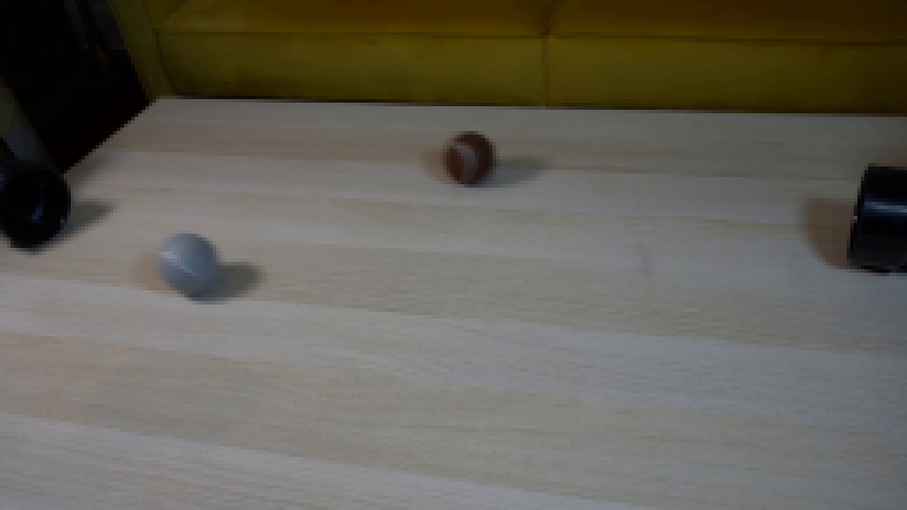
视觉工具实际返回图片 3
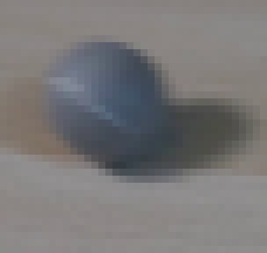
视觉工具实际返回图片 4
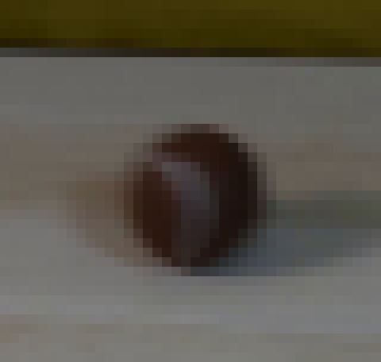
视觉工具实际返回图片 5
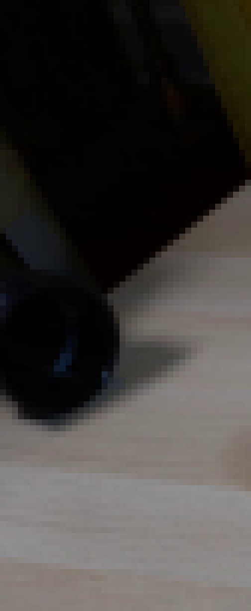
视觉工具实际返回图片 6
视觉工具实际返回图片 7
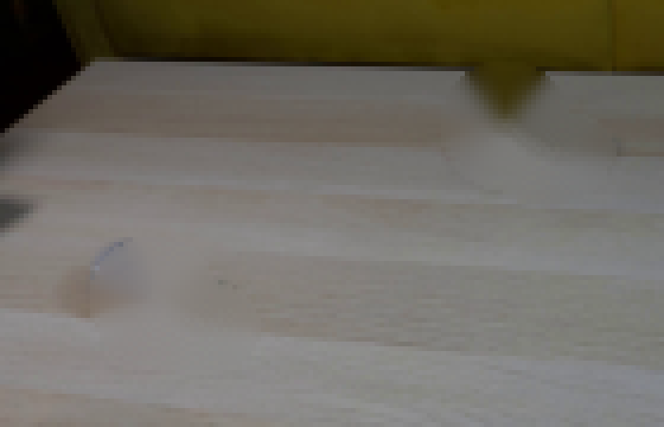
视觉工具实际返回图片 8
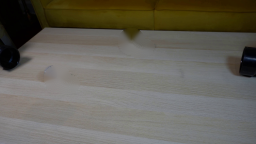
视觉工具实际返回图片 9

视觉工具实际返回图片 10
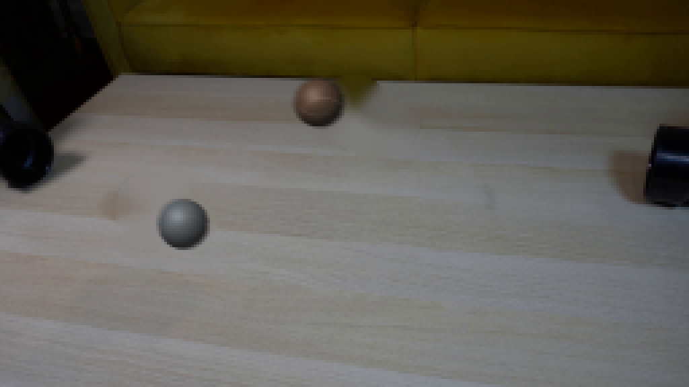
视觉工具实际返回图片 11
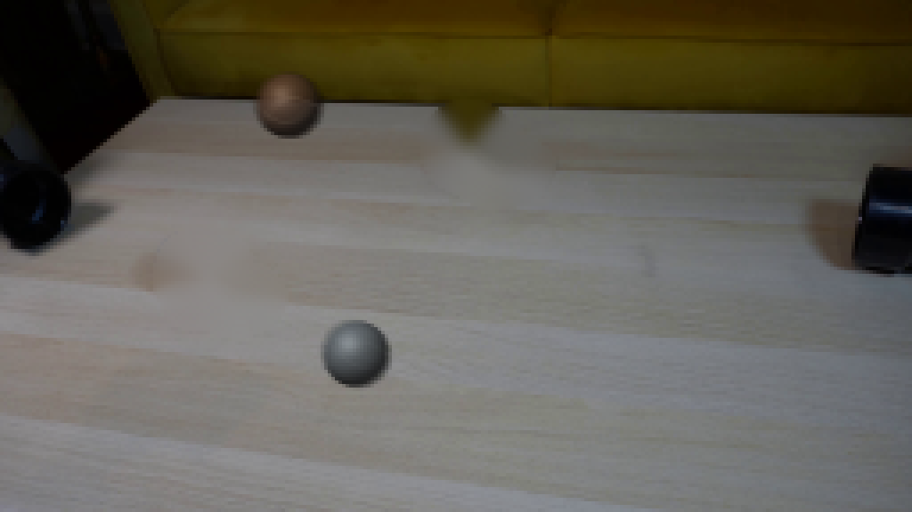
视觉工具实际返回图片 12
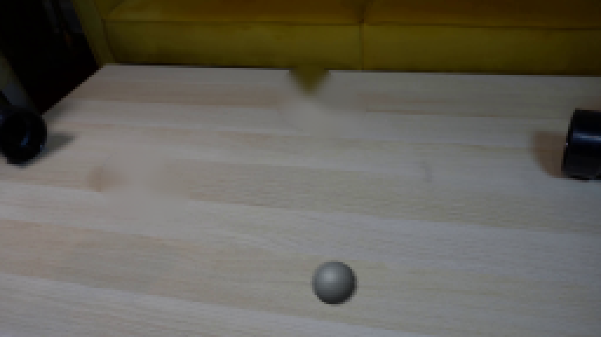
视觉工具实际返回图片 13
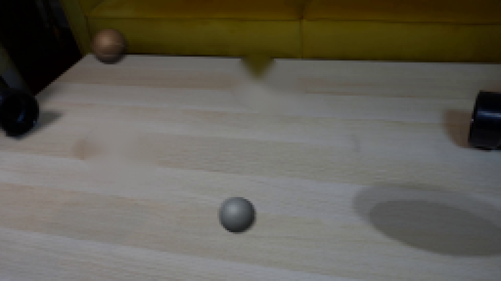
视觉工具实际返回图片 14
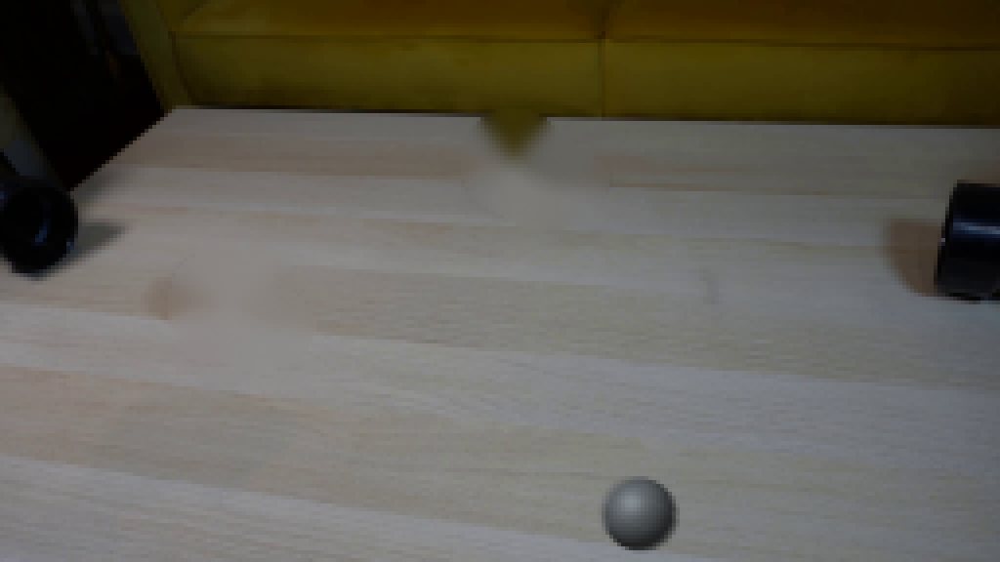
视觉工具实际返回图片 15
视觉工具实际返回图片 16

视觉工具实际返回图片 17
视觉工具实际返回图片 18

视觉工具实际返回图片 19
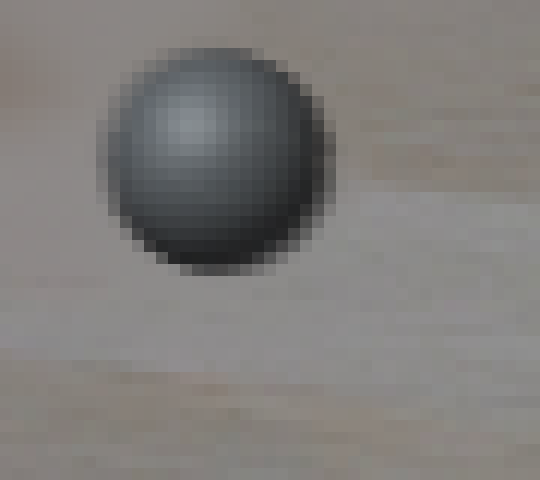
视觉工具实际返回图片 20

视觉工具实际返回图片 21
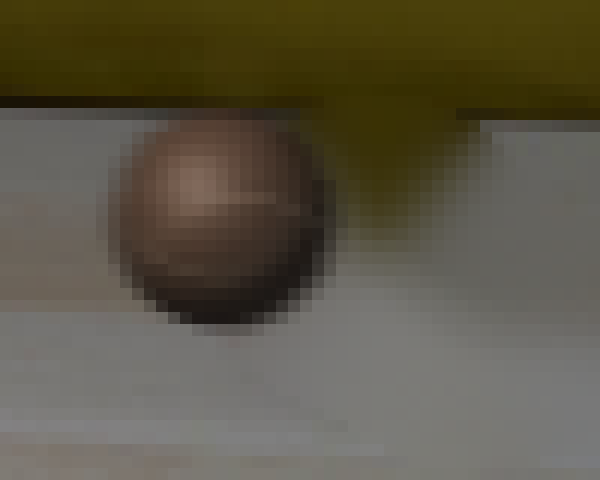
视觉工具实际返回图片 22
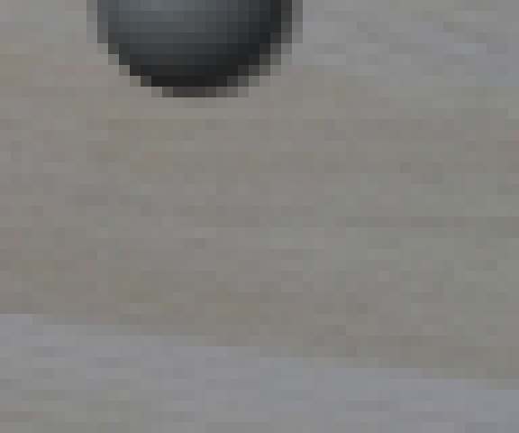
视觉工具实际返回图片 23

视觉工具实际返回图片 24
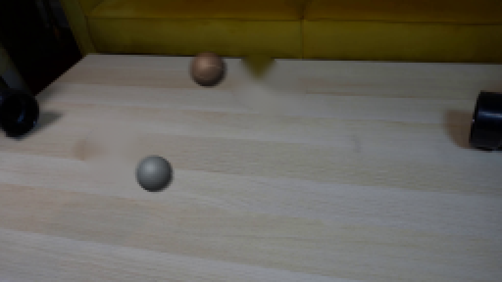
视觉工具实际返回图片 25
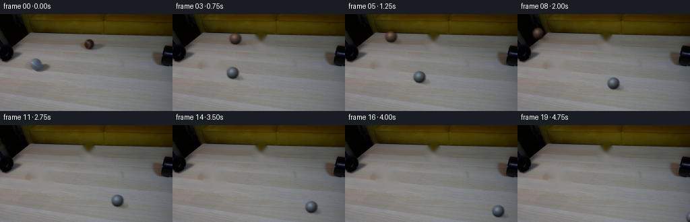
视觉工具实际返回图片 26
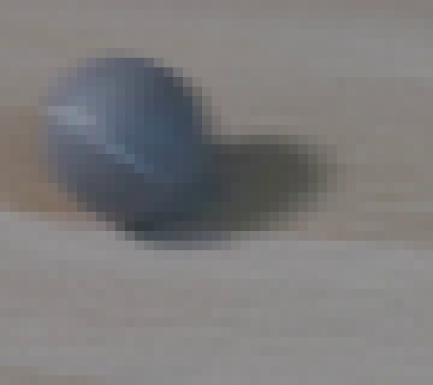
视觉工具实际返回图片 27
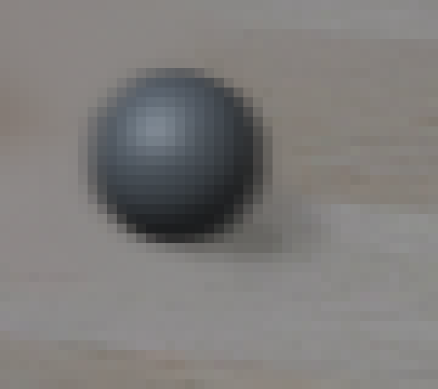
视觉工具实际返回图片 28
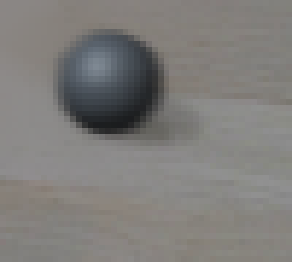
视觉工具实际返回图片 29
视觉工具实际返回图片 30
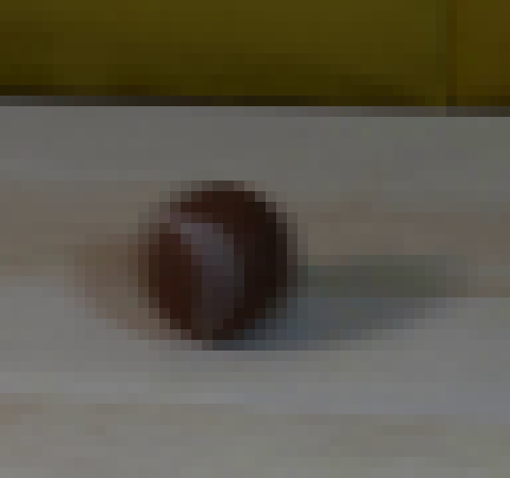
视觉工具实际返回图片 31
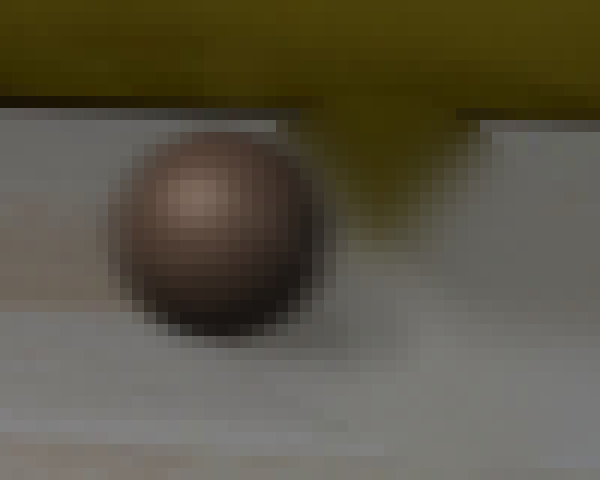
视觉工具实际返回图片 32
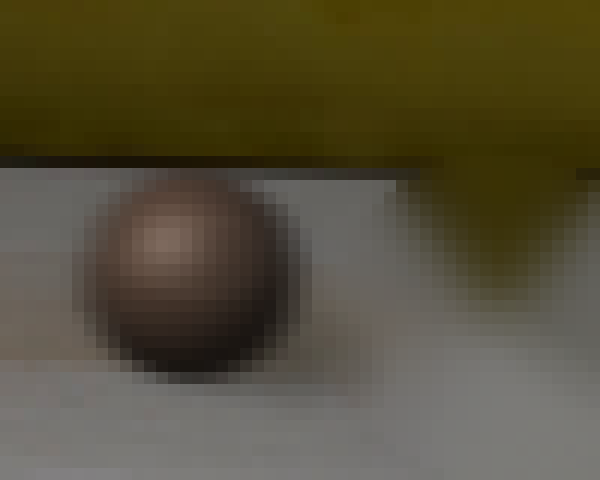
视觉工具实际返回图片 33
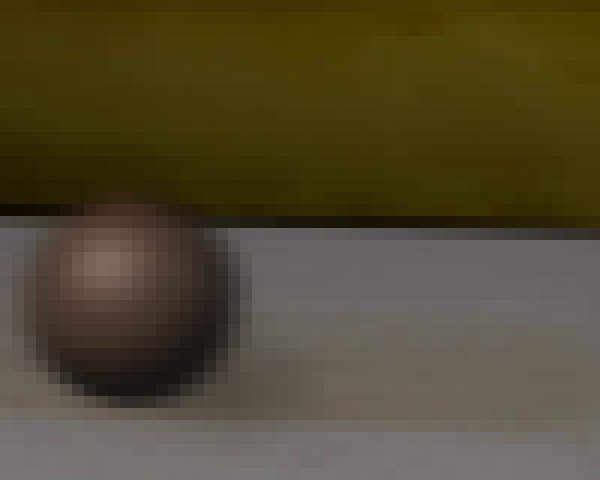
视觉工具实际返回图片 34

保存候选 2 份；完成命令 33 次；可验证图片返回 34 张。原始 API 响应与完整日志保留在本地。